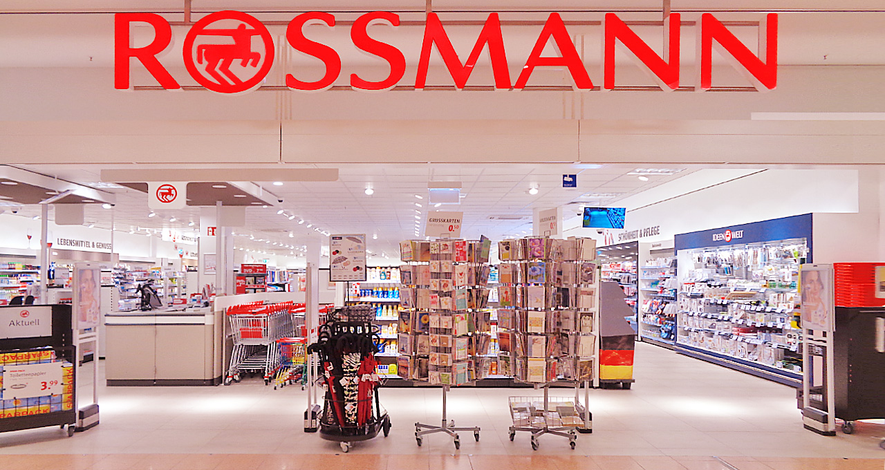

Acessando uma planilha do Google Sheets usando Python
Guia prático para integrar o Python com o Google Sheets via API.
// sobre mim
Cientista de Dados com 4 anos de experiência focado em Inteligência de Mercado, Planejamento Comercial e Automação.
Pós-graduando em Ciência de Dados pela Data Science Academy, com formação em Engenharia Metalúrgica pela Universidade Federal do Ceará. Apaixonado por transformar grandes volumes de dados em informações estratégicas que orientam decisões de negócios.
Tenho sólida experiência em análise de performance comercial, avaliando métricas por canal de vendas, região e produto, além de identificar oportunidades de melhoria na operação.
Possuo conhecimentos avançados em modelagem preditiva, estatística e machine learning, aplicados para prever tendências de mercado e maximizar o desempenho comercial.
// projetos

Análise exploratória e modelo preditivo para prever as vendas de qualquer loja Rossmann para qualquer data.
Análise Exploratória de Dados a partir dos dados disponibilizados pela Olist no Kaggle.
Extração de dados de concorrentes focando no produto de entrada: calças jeans masculinas.
Análise exploratória para identificar imóveis abaixo do preço médio e definir estratégias de revenda.
// escrita
// formação